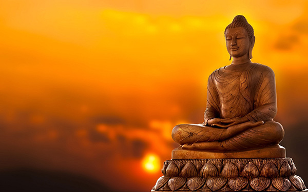

Getting closer to the Buddha
Buddhist practitioners light and burn incense sticks. They raise the burning sticks above the head and bow to the statues of Buddha. Then they place their sticks vertically on burners from which smoke wafts.
Worshipers do so in a hope to talk to the Buddha who will appear in the smoke. This is the scene you will see in most of the functioning Buddhist temples in China.
Incense burning is a common Chinese religious ritual in Chinese Buddhism as well as Chinese ancestor worship and Taoism. The most common practice is that followers burn three sticks of incense at once, one for the Buddha; another for the Buddha’s teachings, known as the Dharma; and a third for the community of Buddhists, the Sangha.
So incense smoke is a soul link between worshipers and the Buddha. With joss sticks burning, people are getting closer the Buddha and it also reminds us to burn ourselves, to give and to sacrifice though in reality, many people come here praying for health, love, money and the list can be much longer.
What would you talk with Buddha if you have the chance to burn incense sticks? For sacrifice or taking? If you are planning your Beijing tour, do allocate one or two hours visiting Lama Temple, also known as Yonghe Temple or Yonghe Lamasery. You will be infected by the solemn and mythical atmosphere of incense burning and praying.
Burning and Praying before the Hall of Harmony and Peace, the main building of Lama Temple.